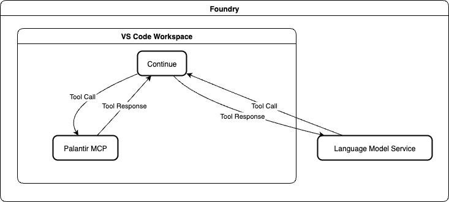
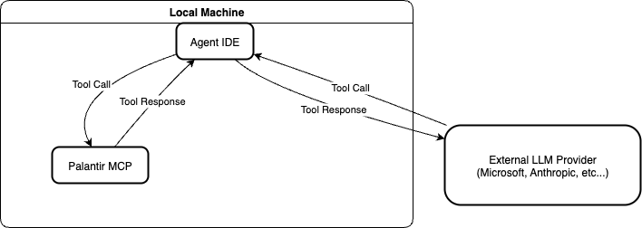

The Palantir Model Context Protocol (MCP) provides secure integration between AI systems and Foundry resources. The security and data governance policies depend on how and where the MCP is used.
The following data flow and security model applies when using Palantir MCP through Continue in VS Code within the Foundry platform:

:::callout{theme="neutral"} Palantir MCP for local development is disabled by default. To use Palantir MCP in a local environment, you must enable it in Control Panel. :::
The following data flow and security models apply when using Palantir MCP on local machines with third-party AI tools (such as VS Code Copilot, Claude Code, Windsurf, or Cursor):

The Palantir MCP has a limited set of tools you can use to write to or modify your ontology and datasets. We do not provide destructive write tools. All tools that can perform write actions are either non-destructive or require a human to approve the changes.
LLM agents are allowed to create new datasets but are not allowed to update or delete existing datasets.
All ontology modifications (including deletions) must be processed through a proposal review; human approval is required to merge changes into your main ontology.